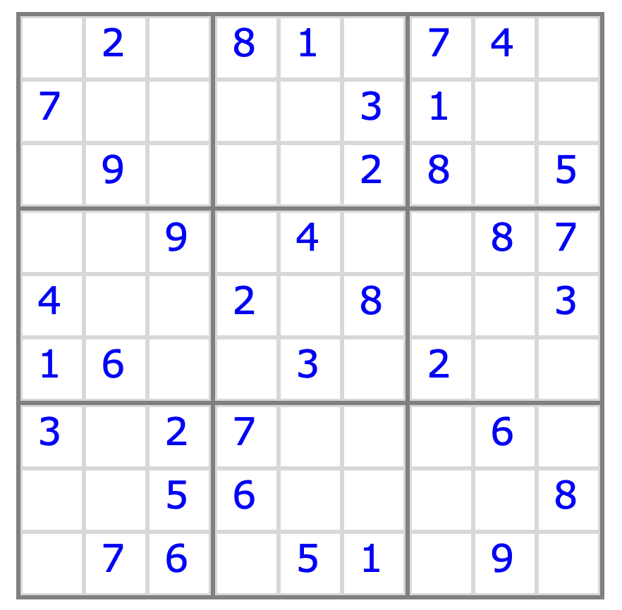

What is more satisfying than solving a Sudoku puzzle? Making a computer solve one for you.
Overview
Sudoku is a number puzzle with a straightforward goal: given some input arrangement of numbers in a 9x9 grid,
fill in the blanks such that each row, column, and 3x3 sub-block contain all of the digits from 1 to 9. Much of
the logic for completing Sudoku puzzles is straightforward and easily encodable in a simple computer program
- so that is what we are going to do!
The Sudoku solver described here was developed for
Project Euler's problem 96,
which involves solving 50 Sudoku puzzles of varying difficulty.
With the logic outlined below, the solver you develop should be able to complete 49 of the Project
Euler puzzles,
which is good enough to find the answer to problem 96 (with a little human input for the remaining puzzle).
A working version of this solver (written in Python) can be found here,
we have also developed a web interface
where you can work a puzzle yourself or ask the solver for help.
You can also follow a video version of this tutorial, here:
Procedure
We will encode enough logic in a computer program to solve 74 out of a set of 75 sample puzzles
(which includes the set of 50 Project Euler puzzles) using the procedure outlined here. Briefly, our algorithm will need to identify
the following situations
loners: if a candidate only occurs once in a row/column/box, then it can be designated
as the sole valid candiate for that position
naked pairs:
if a pair of positions in the same row/column/block have only two candidates and these candidates
are identical, those values can be removed from the candidate lists for the remaining positions
in that row/column/block
hidden pairs:
if a pair of positions in the same row/column/block share two common candidates that appear
in no other position in the row/common/block, then these are the only viable candidates for these two
positions
naked triples:
if three positions in the same row/column/block share the same three and only
three candidates,
those values can be removed from the candidate lists for the remaining positions
in that row/column/block
box claims: if a candidate appears in only one row/column of a block, then the number is claimed for that block
and removed from the candidate lists for the same row/column in other blocks
row/column claims: if the only instances of a candidate in a row/column occur within the same block, then that number
can be removed from the candidate lists of all other positions within that block
Step 1. Read the puzzle
Consider the following puzzle:

The puzzle above is one of the puzzles given in the file provided
here. Specifically, the puzzle above is the seventh puzzle,
defined in that file by
So, the first thing we need to do is develop a function to read in each puzzle from this file and to place
the data into
a suitable container. The Python function below will read in a single puzzle from
the sample file and return that puzzle as a 9x9 numpy array of integers.
import numpy as np
def read_puzzle(f):
"""
read puzzle
:param f: a file pointer to the open file containing the puzzles
:return puzzle: a 9x9 numpy array containing the puzzle
"""
puzzle = np.zeros((9,9),dtype=np.int8)
# grid number (e.g., "GRID 01")
f.readline()
for i in range (0,9):
line = f.readline()
for j in range (0,9):
puzzle[i,j] = line[j]
return puzzle
Step 2. Initialize the candidate lists
For each blank spot in the puzzle (denoted with "0" in Project Euler's format), we can
develop a list of possible candidate values for the solved puzzle. I find that an array of 81 lists representing
each of the positions in the 9x9 grid is a suitable object that will allow us to add candidates [list.append(candidate)],
remove candidates [list.remove(candidate)], or search for candidates within a given list [candidate in list]. Such an object
can be initialized as 81 empty lists as
candidate_list = [ [] for _ in range(81) ]
An initial candidate list can be populated by
marching through each blank position and checking whether each possible number (1-9) appears in the
corresponding row/column/block.
If the number does appear in the corresponding row/column/block, then it cannot be a candidate for that position.
The update_candidate_list function defined here performs this task.
def update_candidate_list(puzzle, candidate_list):
"""
update candidate list for each element of puzzle
:param puzzle: the sudoku puzzle
:param candidate_list: list of possible values for each element of puzzle
"""
# clear candidate list
for i in range (0,9):
for j in range (0,9):
ij = i * 9 + j
candidate_list[ij].clear()
# build candidate list
# row
for row in range (0,9):
# column
for column in range (0,9):
# for this row/column, if no value already, what are possible values?
if ( puzzle[row,column] == 0 ):
for target in range (1,10):
in_row = target in puzzle[row,:]
in_col = target in puzzle[:,column]
in_block = check_block(puzzle, row, column, target)
if not in_row and not in_col and not in_block:
candidate_list[row*9 + column].append(target)
return candidate_list
Note that the function "check_block" has yet to be defined. I leave it to you as an exercise to implement this
function yourself. If you get stuck, you can find a working version in the full Python code.
At this point, we have minimal logic necessary to make some progress toward a solution. Once the candidate lists
have been built, we can check if any position has only one possible candidate. If that is the case, then the puzzle
can be updated accordingly.
Consider the puzzle given above, where I have labeled the candidate lists for the first 3x3 sub-block:
{% include_relative puzzle_sole.html %}
The candidate lists for the positions highlighted in red have only one possible value, so we know these
values must be solutions for these positions. Further, once the value 6 has been assigned to the bottom
left position of this sub-block, we know that the top left position of the sub-block (shaded yellow) must have a value of 5.
It turns out that this minimal logic is sufficient to solve some very easy Sudoku puzzles; at this
point, your solver could be smart enough to complete 12/75 of the sample puzzles!
To make real progress for more challenging puzzles, though, we will need to implement additional logic that will
allow us to eliminate potential candidates from the candidate lists.
Step 3. Identify loners
If a candidate only occurs once in a row/column/box, then it can be designated as the sole valid candiate for that
position.
Consider the puzzle given above, after applying the logic we just discussed to the first sub-block:
{% include_relative puzzle_loner.html %}
The position highlighted in red has two candidate values: 1 and 4. However, we can see
that the value of 1 is special because no other position in the block can accomodate this value. Therefore,
we can remove the other candidate from the candidate list for the position highlighted in red; the final value
for this position must be 1!
The following function identifies such loners in each row/column/block of the puzzle and prunes the
candidate lists
accordingly.
def loners(candidate_list):
"""
if a candidate only occurs once in a row/column/box, then it can be designated
as the sole valid candiate for that position
:param candidate_list: list of possible values for each element of puzzle
"""
# loop over target values
for target in range (1,10):
# check for target in candidate lists of given row
for row in range (0,9):
n_instances = 0
for col in range (0,9):
position = row * 9 + col
in_list = target in candidate_list[position]
if ( in_list ):
n_instances += 1
# if it appears only once, remove all other candidates from relevant list
if ( n_instances == 1 ):
for col in range (0,9):
position = row * 9 + col
in_list = target in candidate_list[position]
if ( in_list ):
candidate_list[position].clear()
candidate_list[position].append(target)
# check for target in candidate lists of given column
for col in range (0,9):
n_instances = 0
for row in range (0,9):
position = row * 9 + col
in_list = target in candidate_list[position]
if ( in_list ):
n_instances += 1
# if it appears only once, remove all other candidates from relevant list
if ( n_instances == 1 ):
for row in range (0,9):
position = row * 9 + col
in_list = target in candidate_list[position]
if ( in_list ):
candidate_list[position].clear()
candidate_list[position].append(target)
# check for target in candidate lists of given block
for bi in range (0,3):
start_row = 3*bi
for bj in range (0,3):
start_col = 3*bj
n_instances = 0
for row in range (start_row,start_row + 3):
for col in range (start_col,start_col + 3):
position = row * 9 + col
in_list = target in candidate_list[position]
if ( in_list ):
n_instances += 1
# if it appears only once, remove all other candidates from relevant list
if ( n_instances == 1 ):
for row in range (start_row,start_row + 3):
for col in range (start_col,start_col + 3):
position = row * 9 + col
in_list = target in candidate_list[position]
if ( in_list ):
candidate_list[position].clear()
candidate_list[position].append(target)
return candidate_list
As simple as the procedure for identifying loners is, this logic is sufficient to solve many easy Sudoku puzzles. At
this point, your solver could be smart enough to solve 40 of the 75 sample puzzles!
Step 4. Identify naked pairs
If a pair of positions in the same row/column/block have only two candidates and these candidates are identical, those values can be removed from the candidate lists for the remaining positions in that row/column/block.
Consider again the puzzle from above:
{% include_relative puzzle_pair.html %}
The positions highlighted in red have only two candidate values, 4 and 9, making them a naked pair.
The positions
highlighted in yellow share a column or sub-block with the red shaded positions, and their candidate lists contain either 4 or 9; these values can safely be removed from these lists.
Interestingly, this logic prunes the candidate lists for three of the yellow shaded positions to the point
that we know precisely what values should solve these positions!
The following function identifies naked pairs in each row/column and block of the puzzle and prunes the candidate
lists accordingly.
def naked_pairs(candidate_list):
"""
if a pair of positions in the same row/column/block have only two candidates and these candidates
are identical, those values can be removed from the candidate lists for the remaining positions
in that row/column/block
:param candidate_list: list of possible values for each element of puzzle
"""
# rows
for row in range (0,9):
# march along pairs in this row by column
for col1 in range (0,9):
position1 = row * 9 + col1
if ( len(candidate_list[position1]) != 2 ):
continue
for col2 in range (col1+1,9):
position2 = row * 9 + col2
if ( len(candidate_list[position2]) != 2 ):
continue
# are the candidate lists the same?
if ( candidate_list[position1] == candidate_list[position2] ):
val0 = candidate_list[position1][0]
val1 = candidate_list[position1][1]
# eliminate these candidates from remaining positions in row
for col in range (0,9):
position = row * 9 + col
if ( position == position1 or position == position2 ):
continue
in_list = val0 in candidate_list[position]
if ( in_list ):
candidate_list[position].remove(val0)
in_list = val1 in candidate_list[position]
if ( in_list ):
candidate_list[position].remove(val1)
# columns
...
...
...
# blocks
...
...
...
candidate_list = loners(candidate_list)
return candidate_list
In this code snippet, the logic applied to identifying naked pairs within rows can also be applied to columns
and blocks, but the
relevant code has been suppressed. If you have trouble
developing this logic yourself, you can find the complete function in the full Python code.
Lastly, note that it might be a good idea to check for loners again, after the candidate lists have been pruned during
the search for naked pairs. With the identification of loners and naked pairs, your solver should be able to solve 44
of the 75 sample
puzzles.
Step 5. Identify hidden pairs
If a pair of positions in the same row/column/block shared two common candidates that appear
in no other position in the row/common/block, then these are the only viable candidates for these two
positions.
You should add a function to identify hidden pairs to your solver. As above, it is probably a good idea to check for loners and naked pairs at the end of this function.
You can find working code for identifying hidden pairs in the full Python code for this project. Once you have implemented box and row/column claiming, your solver should be able to solve 56 of the 75 sample puzzles.
Step 6. Identify naked triples
If three positions in the same row/column/block share the same three and only
three candidates,
those values can be removed from the candidate lists for the remaining positions
in that row/column/block. You should add a function to identify naked triples to your solver
and be sure to check for loners, naked pairs, and hidden pairs after you have pruned your
candidate list in this function.
You can find working code for identifying naked triples in the full Python code for this project.
With the addition of this logic, your solver should be able
to solve 58 of the 75 sample puzzles.
Step 7. Box claiming and row/column claiming
If a candidate appears in only one row/column of a block, then the number is claimed for that block and removed from the
candidate lists for the same row/column in other blocks. Similarly, if the only instances of a candidate in a row/column
occur within the same block, then that candidate can be removed from the candidate lists of all other positions within that
block. You should add three functions for box/row/column claiming to your solver. As always, it is probably a good idea to
apply all previously developed logic at the end of each of these functions.
You can find working code for box/row/column clamining in the full Python code for this project.
Once you have implemented box and row/column claiming, your solver should be able to solve 74 of the 75 sample puzzles.
The remaining puzzle (#7) can be solved with some human intervention
(i.e., by supplying one additional correct value to these puzzles in the input file).
Step 8. Iterate
To solve any Sudoku puzzle, the logic outlined above must be applied in an iterative fashion until no more moves can
be made. The following code reads puzzles from puzzle.txt and attemps to solve each of them.
A warning message is printed whenever a solution
cannot be found:
import numpy as np
def main():
"""
Sudoku solver.
"""
# open puzzle file
f = open("puzzles.txt","r")
for n_puzzle in range (0,50):
# read current puzzle
puzzle = read_puzzle(f)
# candidate list
candidate_list = [ [] for _ in range(81) ]
# solve!
for it in range (0,1000):
# update candidate list
candidate_list = update_candidate_list(puzzle, candidate_list)
# check for loners
candidate_list = loners(candidate_list)
# check for naked pairs
candidate_list = naked_pairs(candidate_list)
# check for hidden pairs
candidate_list = hidden_pairs(candidate_list)
# check for naked triples
candidate_list = naked_triples(candidate_list)
# box claim:
candidate_list = box_claiming(candidate_list)
# row claim:
candidate_list = row_claiming(candidate_list)
# column claim:
candidate_list = column_claiming(candidate_list)
# update puzzle if any positions only have one candidate
n_moves = 0
for i in range (0,9):
for j in range (0,9):
ij = i * 9 + j
n = len(candidate_list[ij])
if n == 1 :
puzzle[i,j] = candidate_list[ij][0]
n_moves += 1
# no more moves
if n_moves == 0:
break
# print puzzle
#print(puzzle)
# if solver is done, check candidate list to determine if it was successful
candidate_list = update_candidate_list(puzzle, candidate_list)
for position in range (0,81):
if ( len(candidate_list[position]) > 0 ):
print(" solver failed to solve puzzle %i!" % (n_puzzle+1) )
break
if __name__ == "__main__":
main()